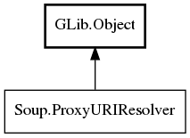

Soup.ProxyURIResolver Reference Manual
Packages
libsoup-2.4
Soup
ProxyURIResolver
get_proxy_uri_async
get_proxy_uri_sync
ProxyURIResolver
Object Hierarchy:

Description:
public
interface
ProxyURIResolver
:
Object
All known implementing classes:
ProxyResolverDefault
Namespace:
Soup
Package:
libsoup-2.4
Content:
Methods:
public
abstract
void
get_proxy_uri_async
(
URI
uri,
MainContext
? async_context,
Cancellable
? cancellable,
ProxyURIResolverCallback
callback)
public
abstract
uint
get_proxy_uri_sync
(
URI
uri,
Cancellable
? cancellable,
out
URI
proxy_uri)